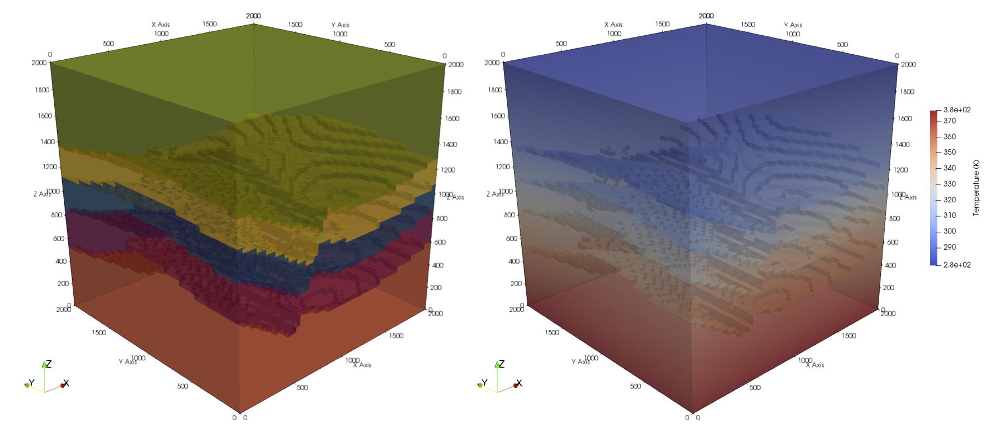

Note
Click here to download the full example code
Export a GemPy Model¶
This section briefly describes how to export a GemPy model to get a working input file for MOOSE. This example is mainly taken from the tutorial gempy export MOOSE from the official GemPy repository. It will guide you through the process of exporting a geological model generated in GemPy (Tutorial Chapter 1-1 therein) so it is usable as a Mesh # in the MOOSE framework.
Creating a geological model¶
The procedure of generating a geological model is presented in detail in Chapter 1-1 of the GemPy tutorials, so it will only be briefly presented here:
import gempy as gp
import matplotlib.pyplot as plt
geo_model = gp.create_model('tutorial_moose_exp')
gp.init_data(geo_model, [0,2000., 0,2000., 0,2000.], [50, 50, 80],
path_o = "../../data/GemPy/simple_fault_model_orientations.csv",
path_i = "../../data/GemPy/simple_fault_model_points.csv",
default_values = True)
Out:
Active grids: ['regular']
tutorial_moose_exp 2021-02-17 13:58
present the units and series
geo_model.surfaces
combine units in series and make two series, as the fault needs its own
gp.map_series_to_surfaces(geo_model,
{"Fault_Series" : 'Main_Fault',
"Strat_Series" : ('Sandstone_2', 'Siltstone', 'Shale', 'Sandstone_1', 'basement')},
remove_unused_series=True)
# set the fault series to be fault object
geo_model.set_is_fault(['Fault_Series'], change_color=False)
check whether series were assigned correctly
geo_model.surfaces
Model generation¶
After loading in the data, we set it up for interpolation and compute the model.
gp.set_interpolator(geo_model,
compile_theano=True,
theano_optimizer='fast_compile',
verbose=[])
gp.compute_model(geo_model, compute_mesh=False)
# sphinx_gallery_thumbnail_number = 1
gp.plot_2d(geo_model, direction='y', cell_number=45,show_data=False, show_boundaries=False, show_topography=False)
Out:
Setting kriging parameters to their default values.
Compiling theano function...
Level of Optimization: fast_compile
Device: cpu
Precision: float64
Number of faults: 1
Compilation Done!
Kriging values:
values
range 3464.1
$C_o$ 285714
drift equations [3, 3]
<gempy.plot.visualization_2d.Plot2D object at 0x7f592eeb8490>
Exporting the Model to MOOSE¶
The voxel-model above already is the same as a model discretized in a hexahedral grid, so my immediately be used as input in a simulation tool, e.g. MOOSE. For this, we need to access to the unit IDs assigned to each voxel in GemPy. The array containing these IDs is called lith_block.
ids = geo_model.solutions.lith_block
print(ids)
Out:
[6. 6. 6. ... 2. 2. 2.]
This array has the shape of (x,) and would be immediately useful, if GemPy and the chosen simulation code would _populate_ a grid in the same way. Of course, however, that is not the case. This is why we have to restructure the lith_block array, so it can be read correctly by MOOSE.
The model resolution is extracted, so is the model extent:
These two parameters are important to, a) restructure lith_block, and b) write the input file for MOOSE correctly. For a), we need to reshape lith_block again to its three dimensions and _re-flatten_ it in a _MOOSE-conform_ way, i.e. reshape to 3D array and then flattened:
The importance of nx, ny, nz is apparent from the cell above. But what about xmin, …, zmax? A MOOSE input-file for mesh generation has the following syntax:
[MeshGenerators]
[./gmg]
type = GeneratedMeshGenerator
dim = 3
nx = 50
ny = 50
nz = 80
xmin = 0.0
xmax = 2000.0
yim = 0.0
ymax = 2000.0
zmin = 0.0
zmax = 2000.0
block_id = '1 2 3 4 5 6'
block_name = 'Main_Fault Sandstone_2 Siltstone Shale Sandstone_1 basement'
[../]
[./subdomains]
type = ElementSubdomainIDGenerator
input = gmg
subdomain_ids = ' ' # here you paste the transformed lith_block vector
[../]
[]
[Mesh]
type = MeshGeneratorMesh
[]
So these parameters are required inputs in the [MeshGenerators] object in the MOOSE input file. GemPy has a method to directly create such an input file, stored in gempy.utils.export.py.
The following cell shows how to call the method:
import gempy.utils.export as export
export.export_moose_input(geo_model, path='')
Out:
Successfully exported geological model as moose input to ./
This method automatically stores a file geo_model_units_moose_input.i at the specified path. Either this input file could be extended with parameters to directly run a simulation, or it is used just for creating a mesh. In the latter case, the next step would be, to run the compiled MOOSE executable witch the optional flag –mesh-only.
E.g. with using the PorousFlow module:
`bash
$path_to_moose/moose/modules/porous_flow/porous_flow-opt -i pct_voxel_mesh.i --mesh-only
`
How to compile MOOSE is described in their documentation.
The now generated mesh with the name geo_model_units_moose_input_in.e can be used as input for another MOOSE input file, which contains the main simulation parameters. To call the file with the grid, the following part has to be added in the MOOSE simulation input file:
[Mesh]
file = geo_model_units_moose_input_in.e
[]
The final output of the simulation may also be such an .e, which can, for instance, be opened with paraview. A simulated temperature field (purely conductive) of the created model would look like this:
{kind=link}
Total running time of the script: ( 0 minutes 46.510 seconds)